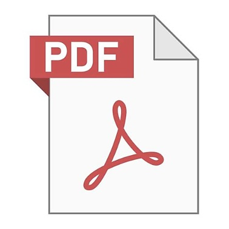
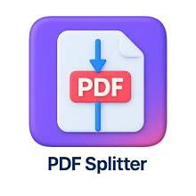
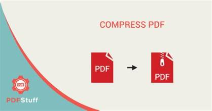
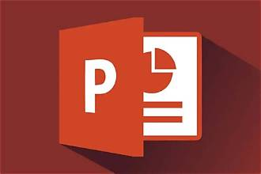
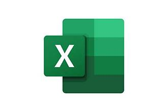
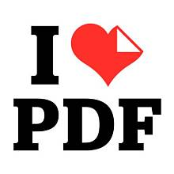
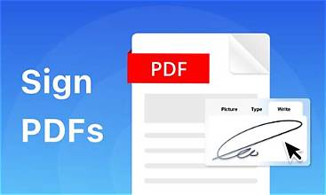
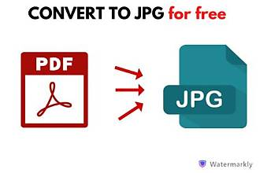

Merge PDF
Combine PDFs in the order you want with the easiest PDF merger availble
Every tool you need to use PDFs, at your fingertips. All are 100% FREE and easy to use. Merge, split, compress, convert, rotate, unlock and watermark PDFs.

Combine PDFs in the order you want with the easiest PDF merger availble

Separate one page or a whole set for easy conversion into independent PDF files

Reduce file size while optimizing quality.
Easily convert your PDF files into easy to edit DOC and DOCX documents. The converted WORD document is almost 100% accurate.

Turn your PDF files into easy to edit PPT and PPTX slideshows

Pull data straight from PDFs into Excel spreadsheets in a few short seconds
Easily convert your PDF files into easy to edit DOC and DOCX documents. The converted WORD document is almost 100% accurate.
Convert PowerPoint to PDF.

Add text,image,shapes or freen hand annotations to a PDF document

Sign yourself or request electronic singnatures from others

convert each PDF image into a jpg or extract all images contained in a PDF